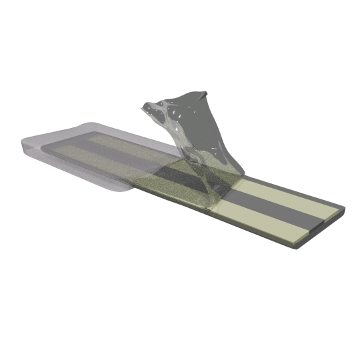
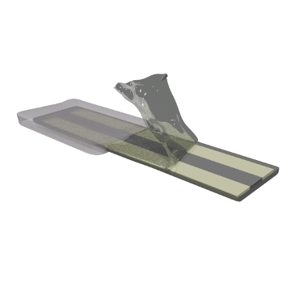

Parallel Mechanism for Wrist Prosthetics Design
IEEE EMBC 2021
This project introduces a parallel mechanism for upper-limb prosthetic wrists. Our offset Kresling-origami-inspired structure generates rotational wrist motion passively, reducing the number of actuators.
In this work, we employed screw theory to derive both its forward and inverse kinematics. The system achieves quasi-spherical mobility while remaining lightweight and tendon-driven, ideal for amputees with trans-radial loss.
This work was done under Prof. Woon-Hong Yeo’s supervision as part of the I2P coursework during my 2nd year as an undergraduate student.
For more information, please refer to our peer-reviewed proceedings article.


Flexible Sensing Systems for Biomedical Monitoring
ACS Applied Electronic Materials 2022
Under Prof. Woon-Hong Yeo’s supervision, I worked on various flexible and stretchable sensing systems for physiological monitoring. These projects include intracranial pressure sensing system, sweat-and-microfluidics-based ion selective sensing system, and wearable electromyogram (EMG) system.
In this highlighted work, we developed a flexible two-lead ECG sensing system, incorporating a breathable elastomer, designed for extended wear.
For more information, please refer to our article.
 
